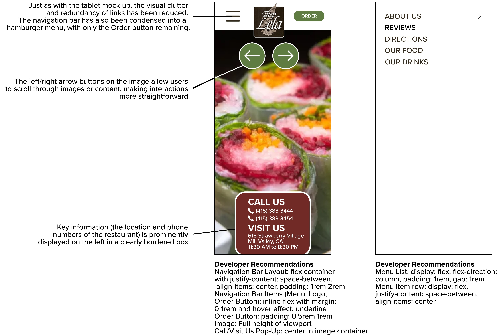

Identifying flaws in an existing restaurant and building a responsive
redesign for various screen sizes
I have frequented the homepage of Thep Lela Thai as an avid patron of
the restaraunt and struggled greatly when navigating the website to
order food for myself and my family.

Key Problems with Efficiency
Thep Lela Thai’s website relies on Adobe Flash, which I believe is no
longer supported in most browsers, making the site inefficient for
users, as the Adobe Flash-powered window makes up a significant
portion of their homepage.
Text can be small, blurry, repetitive and unclear, meaning that users
may have trouble deciding where the information they seek is located.
Similarly, users may waste time navigating redundant links.
Key Problems with Learnability
The website follows an outdated web design approach, making it
difficult for new users to understand and interact with it.
There is not a clear visual hierarchy, meaning that important
information such as the restaurant’s hours and menu, is not prominent.
The website’s design does not clearly indicate where users should
click to get more information.
Key Problems with Memorability
While the website is certainly distinct in terms of color, pattern,
and photograph usage, its aesthetic does not make it easy to remember.
Users who struggle to navigate the site due to Adobe Flash errors and
accessibility issues are unlikely to return.
Problems Identified by WebAIM WAVE
WebAIM WAVE Web Accessibility Evaluation Tools confirm that Thep Lela
Thai Resaurant’s website has significant usability and accessibility
problems, detecting 14 instances of missing alternative text, 2
instances of Adobe Flash elements, 11 instances of device-dependent
handlers, a missing language attribute and missing page regions.
In other words, many of the important images on the website lack
alternative text, making the website inaccessible for screen reader
users.
Additionally, the website lacks landmarks and does not specify a
language, which also affects screen reader users.
Furthermore, since Adobe Flash is obsolete and not supported on modern
browsers, some elements of the website are unusable.
Finally, some interactions rely on mouse-based actions, making
navigation difficult for users with disabilities.
Based on these efficiency, learnability, and memorability problems, I
offer a redesign of the Thep Lela Thai homepage that enhances the
experience of its users.
Visual Design Style Guide

Large Computer Mockup

Tablet Mockup

Phone Mockup

After receiving critiques from peers, I created a redesign for the
webpage based on the above mockups.
Their comments included the recommendation to add a component that
identifies the background image for customers who may want to order
the menu item displayed, the recommendation to add a 'Home' button,
and ideas for where a graphic from the original website could be
included.
Large Computer Redesign

Tablet Redesign

Phone Redesign